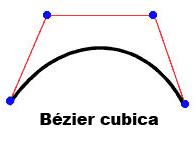

| Pacchetto | flash.display |
| Classe | public final class Graphics |
| Ereditarietà | Graphics |
| Versione linguaggio: | ActionScript 3.0 |
| Versioni runtime: | AIR 1.0, Flash Player 9, Flash Lite 4 |
graphics che corrisponde a un oggetto Graphics. Le seguenti funzioni facilitano l'uso della classe: drawRect(), drawRoundRect(), drawCircle() e drawEllipse().
Non è possibile creare un oggetto Graphics direttamente dal codice ActionScript. Se chiamate new Graphics(), viene generata un'eccezione.
La classe Graphics è finale; non può avere sottoclassi.
Altri esempi
Disegno di forme mediante metodi incorporati
Creazione di linee sfumate e riempimenti con gradiente
Definizione di un oggetto Matrix da usare con un gradiente
Uso della classe Math con i metodi di disegno
Esempio dell'API di disegno: Algorithmic Visual Generator
Altre informazioni
 Nascondi proprietà pubbliche ereditate
Nascondi proprietà pubbliche ereditate Mostra proprietà pubbliche ereditate
Mostra proprietà pubbliche ereditate| Metodo | Definito da | ||
|---|---|---|---|
beginBitmapFill(bitmap:BitmapData, matrix:Matrix = null, repeat:Boolean = true, smooth:Boolean = false):void
Riempie un'area di disegno con un'immagine bitmap. | Graphics | ||
Specifica un riempimento semplice a colore singolo utilizzato per le chiamate successive ad altri metodi Graphics (ad esempio, lineTo() o drawCircle()) durante il disegno. | Graphics | ||
beginGradientFill(type:String, colors:Array, alphas:Array, ratios:Array, matrix:Matrix = null, spreadMethod:String = "pad", interpolationMethod:String = "rgb", focalPointRatio:Number = 0):void
Specifica un riempimento con gradiente utilizzato per le chiamate successive ad altri metodi Graphics (ad esempio lineTo() o drawCircle()) per l'oggetto. | Graphics | ||
Specifica un riempimento con shader utilizzato per le chiamate successive ad altri metodi Graphics (ad esempio lineTo() or drawCircle()) per l'oggetto. | Graphics | ||
Cancella gli elementi grafici disegnati in questo oggetto Graphics e ripristina le impostazioni dello stile di linea e di riempimento. | Graphics | ||
Copia tutti i comandi di disegno dall'oggetto Graphics di origine nell'oggetto Graphics chiamante. | Graphics | ||
cubicCurveTo(controlX1:Number, controlY1:Number, controlX2:Number, controlY2:Number, anchorX:Number, anchorY:Number):void
Disegna una curva di Bézier cubica dalla posizione di disegno corrente al punto di ancoraggio specificato. | Graphics | ||
Disegna una curva di Bézier quadratica con lo stile di linea corrente dalla posizione di disegno corrente a (anchorX, anchorY) mediante il punto di controllo specificato da (controlX, controlY). | Graphics | ||
Disegna un cerchio. | Graphics | ||
Disegna un'ellisse. | Graphics | ||
Invia una serie di istanze IGraphicsData per disegnare. | Graphics | ||
Invia una serie di comandi per disegnare. | Graphics | ||
Disegna un rettangolo. | Graphics | ||
drawRoundRect(x:Number, y:Number, width:Number, height:Number, ellipseWidth:Number, ellipseHeight:Number = NaN):void
Disegna un rettangolo arrotondato. | Graphics | ||
drawTriangles(vertices:Vector.<Number>, indices:Vector.<int> = null, uvtData:Vector.<Number> = null, culling:String = "none"):void
Viene eseguito il rendering di una serie di triangoli, di solito per distorcere le bitmap e conferire un aspetto tridimensionale. | Graphics | ||
Applica un riempimento alle linee e alle curve aggiunte dopo l'ultima chiamata al metodo beginFill(), beginGradientFill() o beginBitmapFill(). | Graphics | ||
 |
Indica se per un oggetto è definita una proprietà specifica. | Object | |
|
Indica se un'istanza della classe Object si trova nella catena di prototipi dell'oggetto specificato come parametro. | Object | |
lineBitmapStyle(bitmap:BitmapData, matrix:Matrix = null, repeat:Boolean = true, smooth:Boolean = false):void
Specifica una bitmap da utilizzare per il tratto quando disegnate delle linee. | Graphics | ||
lineGradientStyle(type:String, colors:Array, alphas:Array, ratios:Array, matrix:Matrix = null, spreadMethod:String = "pad", interpolationMethod:String = "rgb", focalPointRatio:Number = 0):void
Specifica un gradiente da utilizzare per il tratto quando disegnate delle linee. | Graphics | ||
Specifica uno shader da utilizzare per il tratto quando disegnate delle linee. | Graphics | ||
lineStyle(thickness:Number = NaN, color:uint = 0, alpha:Number = 1.0, pixelHinting:Boolean = false, scaleMode:String = "normal", caps:String = null, joints:String = null, miterLimit:Number = 3):void
Specifica lo stile della linea utilizzato per le chiamate successive ai metodi Graphics, ad esempio lineTo() o drawCircle(). | Graphics | ||
Disegna una linea con lo stile di linea corrente dalla posizione di disegno corrente a (x, y); la posizione di disegno corrente viene quindi impostata su (x, y). | Graphics | ||
Sposta la posizione di disegno corrente nel punto (x, y). | Graphics | ||
|
Indica se la proprietà specificata esiste ed è enumerabile. | Object | |
Interroga un oggetto Sprite o Shape (e, facoltativamente, i relativi oggetti secondari) per il contenuto grafico vettoriale. | Graphics | ||
|
Imposta la disponibilità di una proprietà dinamica per le operazioni cicliche. | Object | |
|
Restituisce la rappresentazione in formato stringa di questo oggetto, formattato in base alle convenzioni specifiche per le versioni localizzate. | Object | |
|
Restituisce la rappresentazione in formato stringa dell'oggetto specificato. | Object | |
|
Restituisce il valore di base dell'oggetto specificato. | Object | |
beginBitmapFill | () | metodo |
public function beginBitmapFill(bitmap:BitmapData, matrix:Matrix = null, repeat:Boolean = true, smooth:Boolean = false):void| Versione linguaggio: | ActionScript 3.0 |
| Versioni runtime: | AIR 1.0, Flash Player 9, Flash Lite 4 |
Riempie un'area di disegno con un'immagine bitmap. Per riempire l'area, la bitmap può essere ripetuta o affiancata a mosaico. Il riempimento rimane attivo finché non chiamate il metodo beginFill(), beginBitmapFill(), beginGradientFill() o beginShaderFill(). Una chiamata al metodo clear() cancella il riempimento.
L'applicazione esegue il rendering del riempimento quando vengono disegnati tre o più punti oppure quando viene chiamato il metodo endFill().
Parametri
bitmap:BitmapData — Un'immagine bitmap opaca o trasparente che contiene i bit da visualizzare.
| |
matrix:Matrix (default = null)
matrix = new flash.geom.Matrix();
matrix.rotate(Math.PI / 4);
| |
repeat:Boolean (default = true)true, l'immagine bitmap viene ripetuta in un motivo a mosaico. Se è false, l'immagine bitmap non viene ripetuta e i bordi della bitmap vengono utilizzati per qualsiasi area di riempimento che si estende al di là della bitmap.
Considerate ad esempio la seguente immagine bitmap (uno schema a scacchiera di 20 x 20 pixel):
Quando
Quando
| |
smooth:Boolean (default = false)false, il rendering delle immagini bitmap modificate in scala viene eseguito utilizzando un algoritmo "Nearest Neighbor" e risultano "pixelizzate". Se è true, il rendering delle immagini bitmap modificate in scala viene eseguito utilizzando un algoritmo bilineare. Il rendering con l'algoritmo "Nearest Neighbor" è più veloce.
|


Elementi API correlati
Esempio ( Come utilizzare questo esempio )
image1.jpg) ruotata e ripetuta per riempire un rettangolo.
- Il file di immagine (
image1.jpg) viene caricato utilizzando gli oggettiLoadereURLRequest. Il file si trova nella stessa directory del file SWF. Il file SWF deve essere compilato con l'opzione Sicurezza riproduzione locale impostata su Accedi solo ai file locali. - Quando l'immagine viene caricata (
Eventè completo), viene chiamato il metododrawImage(). Il metodoioErrorHandler()scrive un commento di traccia se l'immagine non è stata caricata correttamente. - Nel metodo
drawImage(), viene creata un'istanza dell'oggettoBitmapDatae le relative larghezza e altezza vengono impostate in base all'immagine (image1.jpg). L'immagine di origine viene disegnata nell'oggetto BitmapData. Successivamente, viene disegnato un rettangolo nell'oggetto SpritemySpritee l'oggetto BitmapData viene utilizzato come riempimento. Utilizzando un oggettoMatrix, il metodobeginBitmapFill()ruota l'immagine di 45 gradi, quindi inizia a riempire il rettangolo con l'immagine fino alla fine.
package {
import flash.display.Sprite;
import flash.display.BitmapData;
import flash.display.Loader;
import flash.net.URLRequest;
import flash.events.Event;
import flash.events.IOErrorEvent;
import flash.geom.Matrix;
public class Graphics_beginBitmapFillExample extends Sprite {
private var url:String = "image1.jpg";
private var loader:Loader = new Loader();
public function Graphics_beginBitmapFillExample() {
var request:URLRequest = new URLRequest(url);
loader.load(request);
loader.contentLoaderInfo.addEventListener(Event.COMPLETE, drawImage);
loader.contentLoaderInfo.addEventListener(IOErrorEvent.IO_ERROR, ioErrorHandler);
}
private function drawImage(event:Event):void {
var mySprite:Sprite = new Sprite();
var myBitmap:BitmapData = new BitmapData(loader.width, loader.height, false);
myBitmap.draw(loader, new Matrix());
var matrix:Matrix = new Matrix();
matrix.rotate(Math.PI/4);
mySprite.graphics.beginBitmapFill(myBitmap, matrix, true);
mySprite.graphics.drawRect(100, 50, 200, 90);
mySprite.graphics.endFill();
addChild(mySprite);
}
private function ioErrorHandler(event:IOErrorEvent):void {
trace("Unable to load image: " + url);
}
}
}
beginFill | () | metodo |
public function beginFill(color:uint, alpha:Number = 1.0):void| Versione linguaggio: | ActionScript 3.0 |
| Versioni runtime: | AIR 1.0, Flash Player 9, Flash Lite 4 |
Specifica un riempimento semplice a colore singolo utilizzato per le chiamate successive ad altri metodi Graphics (ad esempio, lineTo() o drawCircle()) durante il disegno. Il riempimento rimane attivo finché non chiamate il metodo beginFill(), beginBitmapFill(), beginGradientFill() o beginShaderFill(). Una chiamata al metodo clear() cancella il riempimento.
L'applicazione esegue il rendering del riempimento quando vengono disegnati tre o più punti oppure quando viene chiamato il metodo endFill().
Parametri
color:uint — Il colore del riempimento (0xRRGGBB).
| |
alpha:Number (default = 1.0) |
Elementi API correlati
Esempio
Come utilizzare questo esempio
Vedete l'esempio alla fine di questa classe per una descrizione della modalità di utilizzo del metodo.
beginGradientFill | () | metodo |
public function beginGradientFill(type:String, colors:Array, alphas:Array, ratios:Array, matrix:Matrix = null, spreadMethod:String = "pad", interpolationMethod:String = "rgb", focalPointRatio:Number = 0):void| Versione linguaggio: | ActionScript 3.0 |
| Versioni runtime: | AIR 1.0, Flash Player 9, Flash Lite 4 |
Specifica un riempimento con gradiente utilizzato per le chiamate successive ad altri metodi Graphics (ad esempio lineTo() or drawCircle()) per l'oggetto. Il riempimento rimane attivo finché non chiamate il metodo beginFill(), beginBitmapFill(), beginGradientFill() o beginShaderFill(). Una chiamata al metodo clear() cancella il riempimento.
L'applicazione esegue il rendering del riempimento quando vengono disegnati tre o più punti oppure quando viene chiamato il metodo endFill().
Parametri
type:String — Un valore della classe GradientType che specifica il tipo di gradiente da utilizzare: GradientType.LINEAR o GradientType.RADIAL.
| |||||||||
colors:Array — Un array di valori di colore RGB esadecimali da utilizzare nel gradiente (ad esempio, il rosso è 0xFF0000, il blu 0x0000FF e così via). È possibile specificare fino a 15 colori. Per ciascun colore, accertarsi di specificare un valore corrispondente nei parametri alphas e ratios.
| |||||||||
alphas:Array — Un array di valori alfa per i colori corrispondenti nell'array dei colori; i valori validi sono compresi tra 0 e 1. Se il valore è minore di 0, il valore predefinito è 0. Se è maggiore di 1, il valore predefinito è 1.
| |||||||||
ratios:Array — Un array di rapporti di distribuzione del colore; i valori validi sono compresi tra 0 e 255. Questo valore definisce la percentuale della larghezza in corrispondenza della quale il campionamento del colore viene eseguito al 100%. Il valore 0 rappresenta la posizione di sinistra nel riquadro del gradiente, mentre 255 rappresenta la posizione di destra.
Nota: questo valore rappresenta le posizioni all'interno del riquadro del gradiente, non nello spazio di coordinate del gradiente finale, che può essere più largo o più stretto del riquadro del gradiente. Specificate un valore per ciascun valore nel parametro Ad esempio, per un gradiente lineare che include due colori, blu e verde, nell'esempio seguente è illustrata la posizione dei colori nel gradiente in base ai diversi valori dell'array
I valori nell'array devono aumentare in maniera sequenziale; ad esempio, | |||||||||
matrix:Matrix (default = null)createGradientBox(), che consente di impostare con facilità la matrice affinché possa essere utilizzata con il metodo beginGradientFill().
| |||||||||
spreadMethod:String (default = "pad")SpreadMethod.PAD, SpreadMethod.REFLECT o SpreadMethod.REPEAT.
Si consideri, ad esempio, un semplice gradiente lineare tra due colori:
import flash.geom.*
import flash.display.*
var fillType:String = GradientType.LINEAR;
var colors:Array = [0xFF0000, 0x0000FF];
var alphas:Array = [1, 1];
var ratios:Array = [0x00, 0xFF];
var matr:Matrix = new Matrix();
matr.createGradientBox(20, 20, 0, 0, 0);
var spreadMethod:String = SpreadMethod.PAD;
this.graphics.beginGradientFill(fillType, colors, alphas, ratios, matr, spreadMethod);
this.graphics.drawRect(0,0,100,100);
Nell'esempio viene utilizzato
Se utilizzate
Se si utilizza
| |||||||||
interpolationMethod:String (default = "rgb")InterpolationMethod.LINEAR_RGB o InterpolationMethod.RGB
Considerate, ad esempio, un gradiente lineare semplice tra due colori (con il parametro
| |||||||||
focalPointRatio:Number (default = 0)focalPointRatio impostato su 0,75:
|


Genera
ArgumentError — Se il parametro type non è valido.
|
Altri esempi
Elementi API correlati
beginShaderFill | () | metodo |
public function beginShaderFill(shader:Shader, matrix:Matrix = null):void| Versione linguaggio: | ActionScript 3.0 |
| Versioni runtime: | Flash Player 10, AIR 1.5 |
Specifica un riempimento con shader utilizzato per le chiamate successive ad altri metodi Graphics (ad esempio lineTo() or drawCircle()) per l'oggetto. Il riempimento rimane attivo finché non chiamate il metodo beginFill(), beginBitmapFill(), beginGradientFill() o beginShaderFill(). Una chiamata al metodo clear() cancella il riempimento.
L'applicazione esegue il rendering del riempimento quando vengono disegnati tre o più punti oppure quando viene chiamato il metodo endFill().
I riempimenti shader non sono supportati nel rendering GPU; le aree piene saranno colorate in ciano.
Parametri
shader:Shader — Lo shader da utilizzare per il riempimento. Questa istanza Shader non è necessaria per specificare l'input di un'immagine. Se, tuttavia, specificate l'input di un'immagine nello shader, dovrete fornire l'input manualmente. A questo scopo, impostate la proprietà input della corrispondente proprietà ShaderInput della proprietà Shader.data.
Quando passate un'istanza Shader a un argomento, lo shader viene copiato internamente. L'operazione di riempimento del disegno utilizza tale copia interna, non un riferimento allo shader originale. Qualsiasi modifica apportata allo shader, ad esempio la modifica del valore di un parametro, dell'input o del codice byte, non verrà applicata alla copia dello shader usata per il riempimento. | |
matrix:Matrix (default = null)
matrix = new flash.geom.Matrix();
matrix.rotate(Math.PI / 4);
Le coordinate ricevute nello shader si basano sulla matrice specificata per il parametro |
Genera
ArgumentError — Quando il tipo di output dello shader non è compatibile con questa operazione (lo shader deve specificare un output pixel3 o pixel4).
| |
ArgumentError — Quando lo shader specifica un input di immagine che non viene fornito.
| |
ArgumentError — Quando è un oggetto ByteArray o Vector.L'istanza <Number> viene utilizzata come input e le proprietà width e height non sono specificate per l'oggetto ShaderInput oppure i valori specificati non corrispondono alla quantità dei dati nell'oggetto di input. Per ulteriori informazioni, fate riferimento alla proprietà ShaderInput.input.
|
Altri esempi
Elementi API correlati
clear | () | metodo |
public function clear():void| Versione linguaggio: | ActionScript 3.0 |
| Versioni runtime: | AIR 1.0, Flash Player 9, Flash Lite 4 |
Cancella gli elementi grafici disegnati in questo oggetto Graphics e ripristina le impostazioni dello stile di linea e di riempimento.
copyFrom | () | metodo |
public function copyFrom(sourceGraphics:Graphics):void| Versione linguaggio: | ActionScript 3.0 |
| Versioni runtime: | Flash Player 10, AIR 1.5, Flash Lite 4 |
Copia tutti i comandi di disegno dall'oggetto Graphics di origine nell'oggetto Graphics chiamante.
Parametri
sourceGraphics:Graphics — L'oggetto Graphics da cui copiare i comandi di disegno.
|
cubicCurveTo | () | metodo |
public function cubicCurveTo(controlX1:Number, controlY1:Number, controlX2:Number, controlY2:Number, anchorX:Number, anchorY:Number):void| Versione linguaggio: | ActionScript 3.0 |
| Versioni runtime: | Flash Player 11, AIR 3 |
Disegna una curva di Bézier cubica dalla posizione di disegno corrente al punto di ancoraggio specificato. Le curve di Bézier cubiche sono composte da due punti di ancoraggio e da due punti di controllo. La curva interpola i due punti di ancoraggio e si incurva verso i due punti di controllo.

I quattro punti che utilizzate per disegnare una curva di Bézier cubica con il metodo cubicCurveTo() sono i seguenti:
- La posizione di disegno corrente è il primo punto di ancoraggio.
- I parametri
anchorXeanchorYspecificano il secondo punto di ancoraggio. - I parametri
controlX1econtrolY1specificano il primo punto di controllo. - I parametri
controlX2econtrolY2specificano il secondo punto di controllo.
Se si chiama il metodo cubicCurveTo() prima di chiamare moveTo(), la curva inizia alla posizione (0, 0).
Se il metodo cubicCurveTo() ha esito positivo, il runtime Flash imposta la posizione di disegno corrente su (anchorX, anchorY). Se il metodo cubicCurveTo() fallisce, la posizione di disegno corrente rimane invariata.
Se il clip filmato include contenuto creato con gli strumenti di disegno di Flash, i risultati delle chiamate del metodo cubicCurveTo() vengono disegnati sotto tale contenuto.
Parametri
controlX1:Number — Specifica la posizione orizzontale del primo punto di controllo in relazione al punto di registrazione dell'oggetto di visualizzazione principale.
| |
controlY1:Number — Specifica la posizione verticale del primo punto di controllo in relazione al punto di registrazione dell'oggetto di visualizzazione principale.
| |
controlX2:Number — Specifica la posizione orizzontale del secondo punto di controllo in relazione al punto di registrazione dell'oggetto di visualizzazione principale.
| |
controlY2:Number — Specifica la posizione verticale del secondo punto di controllo in relazione al punto di registrazione dell'oggetto di visualizzazione principale.
| |
anchorX:Number — Specifica la posizione orizzontale del punto di ancoraggio in relazione al punto di registrazione dell'oggetto di visualizzazione principale.
| |
anchorY:Number — Specifica la posizione verticale del punto di ancoraggio in relazione al punto di registrazione dell'oggetto di visualizzazione principale.
|
Esempio ( Come utilizzare questo esempio )
Tracciate quattro curve per creare un cerchio e riempitelo di blu.
A causa della natura dell'equazione cubica di Bézier, il cerchio non è perfetto. Il modo migliore per disegnare un cerchio è utilizzare il metodo drawCircle() della classe Graphics.
package {
import flash.display.Sprite;
import flash.display.Shape;
public class Graphics_cubicCurveToExample extends Sprite
{
public function Graphics_cubicCurveToExample():void
{
var rounderObject:Shape = new Shape();
rounderObject.graphics.beginFill(0x0000FF);
rounderObject.graphics.moveTo(250, 0);
rounderObject.graphics.cubicCurveTo(275, 0, 300, 25, 300, 50);
rounderObject.graphics.cubicCurveTo(300, 75, 275, 100, 250, 100);
rounderObject.graphics.cubicCurveTo(225, 100, 200, 75, 200, 50);
rounderObject.graphics.cubicCurveTo(200, 25, 225, 0, 250, 0);
rounderObject.graphics.endFill();
this.addChild(rounderObject);
}
}
}
curveTo | () | metodo |
public function curveTo(controlX:Number, controlY:Number, anchorX:Number, anchorY:Number):void| Versione linguaggio: | ActionScript 3.0 |
| Versioni runtime: | AIR 1.0, Flash Player 9, Flash Lite 4 |
Disegna una curva di Bézier quadratica con lo stile di linea corrente dalla posizione di disegno corrente a (anchorX, anchorY) mediante il punto di controllo specificato da (controlX, controlY). La posizione di disegno corrente viene quindi impostata su (anchorX, anchorY). Se il clip filmato in cui si sta disegnando include contenuto creato con gli strumenti di disegno di Flash, le chiamate a curveTo() vengono disegnate sotto tale contenuto. Se chiamate il metodo curveTo() prima delle chiamate al metodo moveTo(), la posizione predefinita del disegno corrente viene impostata su (0, 0). Se mancano uno o più parametri, il metodo ha esito negativo e la posizione di disegno corrente non cambia.
La curva disegnata è una curva Bézier quadratica. Le curve Bézier quadratiche sono composte da due punti di ancoraggio e da un punto di controllo. La curva interpola i due punti di ancoraggio e si incurva verso il punto di controllo.

Parametri
controlX:Number — Un numero che specifica la posizione orizzontale del punto di controllo in relazione al punto di registrazione dell'oggetto di visualizzazione principale.
| |
controlY:Number — Un numero che specifica la posizione verticale del punto di controllo in relazione al punto di registrazione dell'oggetto di visualizzazione principale.
| |
anchorX:Number — Un numero che specifica la posizione orizzontale del punto di ancoraggio successivo in relazione al punto di registrazione dell'oggetto di visualizzazione principale.
| |
anchorY:Number — Un numero che specifica la posizione verticale del punto di ancoraggio successivo in relazione al punto di registrazione dell'oggetto di visualizzazione principale.
|
Esempio ( Come utilizzare questo esempio )
Tracciate quattro curve per creare un cerchio e riempirlo di verde.
A causa della natura dell'equazione quadratica di Bézier, il cerchio non è perfetto. Il modo migliore per disegnare un cerchio è utilizzare il metodo drawCircle() della classe Graphics.
package {
import flash.display.Sprite;
import flash.display.Shape;
public class Graphics_curveToExample1 extends Sprite
{
public function Graphics_curveToExample1():void
{
var roundObject:Shape = new Shape();
roundObject.graphics.beginFill(0x00FF00);
roundObject.graphics.moveTo(250, 0);
roundObject.graphics.curveTo(300, 0, 300, 50);
roundObject.graphics.curveTo(300, 100, 250, 100);
roundObject.graphics.curveTo(200, 100, 200, 50);
roundObject.graphics.curveTo(200, 0, 250, 0);
roundObject.graphics.endFill();
this.addChild(roundObject);
}
}
}
curveTo().
Vengono disegnate due linee curve di 1 pixel e lo spazio tra queste viene riempito di bianco. Il metodo moveTo() viene utilizzato per collocare la posizione di disegno corrente sulle coordinate (100, 100). La prima curva sposta la posizione di disegno su (100, 200), il suo punto di destinazione. La seconda curva riporta la posizione all'origine (100, 100), il suo punto di destinazione. I punti di controllo orizzontali determinano le varie dimensioni delle curve.
package {
import flash.display.Sprite;
import flash.display.Shape;
public class Graphics_curveToExample2 extends Sprite
{
public function Graphics_curveToExample2() {
var newMoon:Shape = new Shape();
newMoon.graphics.lineStyle(1, 0);
newMoon.graphics.beginFill(0xFFFFFF);
newMoon.graphics.moveTo(100, 100);
newMoon.graphics.curveTo(30, 150, 100, 200);
newMoon.graphics.curveTo(50, 150, 100, 100);
graphics.endFill();
this.addChild(newMoon);
}
}
}
drawCircle | () | metodo |
public function drawCircle(x:Number, y:Number, radius:Number):void| Versione linguaggio: | ActionScript 3.0 |
| Versioni runtime: | AIR 1.0, Flash Player 9, Flash Lite 4 |
Disegna un cerchio. Impostate lo stile della linea, il riempimento o entrambi prima di chiamare il metodo drawCircle(), mediante una chiamata al metodo linestyle(), lineGradientStyle(), beginFill(), beginGradientFill() o beginBitmapFill().
Parametri
x:Number — La posizione x del centro del cerchio relativa al punto di registrazione dell'oggetto di visualizzazione principale (in pixel).
| |
y:Number — La posizione y del centro del cerchio relativa al punto di registrazione dell'oggetto di visualizzazione principale (in pixel).
| |
radius:Number — Il raggio del cerchio (in pixel).
|
Elementi API correlati
Esempio
Come utilizzare questo esempio
Vedete l'esempio alla fine di questa classe per una descrizione della modalità di utilizzo del metodo.
drawEllipse | () | metodo |
public function drawEllipse(x:Number, y:Number, width:Number, height:Number):void| Versione linguaggio: | ActionScript 3.0 |
| Versioni runtime: | AIR 1.0, Flash Player 9, Flash Lite 4 |
Disegna un'ellisse. Impostate lo stile della linea, il riempimento o entrambi prima di chiamare il metodo drawEllipse(), mediante una chiamata al metodo linestyle(), lineGradientStyle(), beginFill(), beginGradientFill() o beginBitmapFill().
Parametri
x:Number — La posizione x della parte superiore sinistra del rettangolo di selezione dell'ellisse relativa al punto di registrazione dell'oggetto di visualizzazione principale (in pixel).
| |
y:Number — La posizione y della parte superiore sinistra del rettangolo di selezione dell'ellisse relativa al punto di registrazione dell'oggetto di visualizzazione principale (in pixel).
| |
width:Number — La larghezza dell'ellisse (in pixel).
| |
height:Number — L'altezza dell'ellisse (in pixel).
|
Elementi API correlati
Esempio ( Come utilizzare questo esempio )
drawEgg() per disegnare tre uova di diverse dimensioni (tre misure di ellisse), in base al parametro eggSize.
- La funzione di costruzione chiama la funzione
drawEgg()e trasferisce i parametri orizzontale e verticale per la determinazione del punto in cui disegnare l'uovo, oltre al tipo di uovo (eggSize). L'altezza e la larghezza delle uova (le ellissi) possono essere utilizzate per decidere dove visualizzarle. - La funzione
drawEgg()disegna le ellissi di varie misure e le riempie di bianco utilizzando il metodobeginFill(). Non esiste una gestione avanzata dell'errore scritta per questa funzione.
package {
import flash.display.Sprite;
import flash.display.Shape;
public class Graphics_drawEllipseExample extends Sprite
{
public static const SMALL:uint = 0;
public static const MEDIUM:uint = 1;
public static const LARGE:uint = 2;
public function Graphics_drawEllipseExample()
{
drawEgg(SMALL, 0, 100);
drawEgg(MEDIUM, 100, 60);
drawEgg(LARGE, 250, 35);
}
public function drawEgg(eggSize:uint, x:Number, y:Number):void {
var myEgg:Shape = new Shape();
myEgg.graphics.beginFill(0xFFFFFF);
myEgg.graphics.lineStyle(1);
switch(eggSize) {
case SMALL:
myEgg.graphics.drawEllipse(x, y, 60, 70);
break;
case MEDIUM:
myEgg.graphics.drawEllipse(x, y, 120, 150);
break;
case LARGE:
myEgg.graphics.drawEllipse(x, y, 150, 200);
break;
default:
trace ("Wrong size! There is no egg.");
break;
}
myEgg.graphics.endFill();
this.addChild(myEgg);
}
}
}
drawGraphicsData | () | metodo |
public function drawGraphicsData(graphicsData:Vector.<IGraphicsData>):void| Versione linguaggio: | ActionScript 3.0 |
| Versioni runtime: | Flash Player 10, AIR 1.5 |
Invia una serie di istanze IGraphicsData per disegnare. Questo metodo accetta un Vector contenente oggetti, tra cui percorsi, riempimenti e tratti, che implementano l'interfaccia IGraphicsData. Un Vector di istanze IGraphicsData può fare riferimento a una parte di una forma o a un set complesso di dati completamente definiti per il rendering di una forma completa.
I percorsi grafici possono contenere altri percorsi grafici. Se l'oggetto Vector graphicsData include un percorso, durante questa operazione viene eseguito il rendering di quel percorso e tutti i relativi percorsi secondari.
Parametri
graphicsData:Vector.<IGraphicsData> — Un oggetto Vector contenente oggetti grafici, ognuno dei quali deve implementare l'interfaccia IGraphicsData.
|
Altri esempi
Elementi API correlati
Classe GraphicsBitmapFill
Classe GraphicsEndFill
Classe GraphicsGradientFill
Classe GraphicsPath
Classe GraphicsShaderFill
Classe GraphicsSolidFill
Classe GraphicsStroke
Classe GraphicsTrianglePath
Metodo readGraphicsData()
Esempio ( Come utilizzare questo esempio )
drawGraphicsData() per il rendering della forma.
package
{
import flash.display.*;
import flash.geom.*;
public class DrawGraphicsDataExample extends Sprite
{
public function DrawGraphicsDataExample()
{
// establish the fill properties
var myFill:GraphicsGradientFill = new GraphicsGradientFill();
myFill.colors = [0xEEFFEE, 0x0000FF];
myFill.matrix = new Matrix();
myFill.matrix.createGradientBox(100, 100, 0);
// establish the stroke properties
var myStroke:GraphicsStroke = new GraphicsStroke(2);
myStroke.fill = new GraphicsSolidFill(0x000000);
// establish the path properties
var pathCommands = new Vector.<int>(5, true);
pathCommands[0] = GraphicsPathCommand.MOVE_TO;
pathCommands[1] = GraphicsPathCommand.LINE_TO;
pathCommands[2] = GraphicsPathCommand.LINE_TO;
pathCommands[3] = GraphicsPathCommand.LINE_TO;
pathCommands[4] = GraphicsPathCommand.LINE_TO;
var pathCoordinates:Vector.<Number> = new Vector.<Number>(10, true);
pathCoordinates.push(10,10, 10,100, 100,100, 100,10, 10,10);
var myPath:GraphicsPath = new GraphicsPath(pathCommands, pathCoordinates);
// populate the IGraphicsData Vector array
var myDrawing:Vector.<IGraphicsData> = new Vector.<IGraphicsData>(3, true);
myDrawing[0] = myFill;
myDrawing[1] = myStroke;
myDrawing[2] = myPath;
// render the drawing
graphics.drawGraphicsData(myDrawing);
}
}
}
drawPath | () | metodo |
public function drawPath(commands:Vector.<int>, data:Vector.<Number>, winding:String = "evenOdd"):void| Versione linguaggio: | ActionScript 3.0 |
| Versioni runtime: | Flash Player 10, AIR 1.5 |
Invia una serie di comandi per disegnare. Il metodo drawPath() accetta un oggetto Vector di singoli comandi di disegno moveTo(), lineTo() e curveTo() e li combina insieme in un’unica chiamata. I parametri del metodo drawPath() combinano i comandi di disegno con le coppie di valori delle coordinate x e y e una direzione di disegno. I comandi di disegno sono numeri interi, rappresentati come costanti definite nella classe GraphicsPathCommand. Le coppie di valori delle coordinate x e y sono numeri in un array in cui ogni coppia definisce una posizione di coordinate. La direzione di disegno è un valore della classe GraphicsPathWinding.
In genere, il rendering dei disegni viene eseguito più velocemente con drawPath() che con una serie di singole chiamate ai metodi lineTo() e curveTo().
Il metodo drawPath() utilizza un calcolo a virgola mobile per fare in modo che la rotazione e la modifica in scala siano più precise e forniscano risultati migliori. Le curve inviate utilizzando il metodo drawPath() possono, tuttavia, presentare piccoli errori di allineamento dei sottopixel se utilizzate insieme ai metodi lineTo() e curveTo().
Il metodo drawPath() utilizza inoltre regole leggermente diverse per il riempimento e il disegno delle righe. Tali regole sono riportate di seguito:
- Quando un riempimento viene applicato al rendering di un percorso:
- Non viene eseguito il rendering di un sottopercorso inferiore a 3 punti. (Notate tuttavia che il rendering del tratto viene comunque eseguito, in base alle regole seguenti relative ai tratti.)
- Un sottopercorso non chiuso (il punto finale non è uguale al punto iniziale) viene implicitamente chiuso.
- Quando un tratto viene applicato al rendering di un percorso:
- I sottopercorsi possono essere composti da un numero qualsiasi di punti.
- Il sottopercorso non viene mai implicitamente chiuso.
Parametri
commands:Vector.<int> — Un oggetto Vector di numeri interi rappresentanti i comandi di disegno. L’insieme dei valori accettati è definito dalle costanti della classe GraphicsPathCommand.
| |
data:Vector.<Number> — Un oggetto Vector di istanze Number in cui ogni coppia di numeri viene gestita come una posizione di coordinate (una coppia x, y). Le coppie di valori delle coordinate x e y non sono oggetti Point; il vettore data corrisponde a una serie di numeri in cui ogni gruppo di due numeri rappresenta una posizione di coordinate.
| |
winding:String (default = "evenOdd") |
Altri esempi
Elementi API correlati
Esempio ( Come utilizzare questo esempio )
drawPath() per il rendering di una stella blu. Il primo oggetto Vector, star_commands, contiene una serie di costanti che rappresentano comandi di disegno della classe GraphicsPathCommand. Il secondo vettore, star_coord, contiene 5 serie di coppie di coordinate x e y. Il metodo drawPath() corrisponde ai comandi con le posizioni per disegnare una stella.
package
{
import flash.display.*;
public class DrawPathExample extends Sprite
{
public function DrawPathExample()
{
var star_commands:Vector.<int> = new Vector.<int>(5, true);
star_commands[0] = GraphicsPathCommand.MOVE_TO;
star_commands[1] = GraphicsPathCommand.LINE_TO;
star_commands[2] = GraphicsPathCommand.LINE_TO;
star_commands[3] = GraphicsPathCommand.LINE_TO;
star_commands[4] = GraphicsPathCommand.LINE_TO;
var star_coord:Vector.<Number> = new Vector.<Number>(10, true);
star_coord[0] = 66; //x
star_coord[1] = 10; //y
star_coord[2] = 23;
star_coord[3] = 127;
star_coord[4] = 122;
star_coord[5] = 50;
star_coord[6] = 10;
star_coord[7] = 49;
star_coord[8] = 109;
star_coord[9] = 127;
graphics.beginFill(0x003366);
graphics.drawPath(star_commands, star_coord);
}
}
}
drawPath() utilizza un tipo di curvatura pari-dispari. Il centro della stella non viene pertanto riempito. Specificate un tipo di curvatura diverso da zero per il terzo parametro, in modo da riempire il centro della stella:
graphics.drawPath(star_commands, star_coord, GraphicsPathWinding.NON_ZERO);
drawRect | () | metodo |
public function drawRect(x:Number, y:Number, width:Number, height:Number):void| Versione linguaggio: | ActionScript 3.0 |
| Versioni runtime: | AIR 1.0, Flash Player 9, Flash Lite 4 |
Disegna un rettangolo. Impostate lo stile della linea, il riempimento o entrambi prima di chiamare il metodo drawRect(), mediante una chiamata al metodo linestyle(), lineGradientStyle(), beginFill(), beginGradientFill() o beginBitmapFill().
Parametri
x:Number — Un numero che indica la posizione orizzontale relativa al punto di registrazione dell'oggetto di visualizzazione principale (in pixel).
| |
y:Number — Un numero che indica la posizione verticale relativa al punto di registrazione dell'oggetto di visualizzazione principale (in pixel).
| |
width:Number — La larghezza del rettangolo (in pixel).
| |
height:Number — L'altezza del rettangolo (in pixel).
|
Genera
ArgumentError — Se il parametro width o height non è un numero (Number.NaN).
|
Elementi API correlati
Esempio ( Come utilizzare questo esempio )
var movieClip:MovieClip = new MovieClip(); movieClip.graphics.beginFill(0xFF0000); movieClip.graphics.drawRect(0, 0, 100, 80); movieClip.graphics.endFill(); movieClip.x = 10; movieClip.y = 10; addChild(movieClip);
drawRoundRect | () | metodo |
public function drawRoundRect(x:Number, y:Number, width:Number, height:Number, ellipseWidth:Number, ellipseHeight:Number = NaN):void| Versione linguaggio: | ActionScript 3.0 |
| Versioni runtime: | AIR 1.0, Flash Player 9, Flash Lite 4 |
Disegna un rettangolo arrotondato. Impostate lo stile della linea, il riempimento o entrambi prima di chiamare il metodo drawRoundRect(), mediante una chiamata al metodo linestyle(), lineGradientStyle(), beginFill(), beginGradientFill() o beginBitmapFill().
Parametri
x:Number — Un numero che indica la posizione orizzontale relativa al punto di registrazione dell'oggetto di visualizzazione principale (in pixel).
| |
y:Number — Un numero che indica la posizione verticale relativa al punto di registrazione dell'oggetto di visualizzazione principale (in pixel).
| |
width:Number — La larghezza del rettangolo arrotondato (in pixel).
| |
height:Number — L'altezza del rettangolo arrotondato (in pixel).
| |
ellipseWidth:Number — La larghezza dell'ellisse utilizzata per disegnare gli angoli arrotondati (in pixel).
| |
ellipseHeight:Number (default = NaN)ellipseWidth.
|
Genera
ArgumentError — Se il parametro width, height, ellipseWidth o ellipseHeight non è un numero (Number.NaN).
|
Elementi API correlati
Esempio
Come utilizzare questo esempio
Vedete l'esempio alla fine di questa classe per una descrizione della modalità di utilizzo del metodo.
drawTriangles | () | metodo |
public function drawTriangles(vertices:Vector.<Number>, indices:Vector.<int> = null, uvtData:Vector.<Number> = null, culling:String = "none"):void| Versione linguaggio: | ActionScript 3.0 |
| Versioni runtime: | Flash Player 10, AIR 1.5 |
Viene eseguito il rendering di una serie di triangoli, di solito per distorcere le bitmap e conferire un aspetto tridimensionale. Il metodo drawTriangles() consente di mappare il riempimento corrente, o il riempimento di una bitmap, alle facce del triangolo utilizzando una serie di coordinate (u,v).
Potete utilizzare qualsiasi tipo di riempimento, tuttavia se al riempimento è associata una matrice di trasformazione, tale matrice verrà ignorata.
Un parametro uvtData migliora il mapping delle texture quando utilizzate un riempimento bitmap.
Parametri
vertices:Vector.<Number> — Un vettore di numeri in cui ogni coppia di numeri viene gestita come una posizione di coordinate (una coppia x, y). Il parametro vertices è obbligatorio.
| |
indices:Vector.<int> (default = null)indexes è null, ogni tre vertici (sei coppie x,y nel vettore vertices) viene definito un triangolo. Altrimenti, ogni indice fa riferimento a un vertice, che corrisponde a una coppia di numeri nel vettore vertices. Ad esempio indexes[1] fa riferimento a (vertices[2], vertices[3]). Il parametro indexes è opzionale, ma in genere riduce la quantità di dati inviati e calcolati.
| |
uvtData:Vector.<Number> (default = null)Se la lunghezza di questo vettore è due volte la lunghezza del vettore Se la lunghezza di questo vettore è tre volte la lunghezza del vettore Se il parametro | |
culling:String (default = "none") |
Altri esempi
Elementi API correlati
endFill | () | metodo |
public function endFill():void| Versione linguaggio: | ActionScript 3.0 |
| Versioni runtime: | AIR 1.0, Flash Player 9, Flash Lite 4 |
Applica un riempimento alle linee e alle curve aggiunte dopo l'ultima chiamata al metodo beginFill(), beginGradientFill() o beginBitmapFill(). Flash utilizza il riempimento che è stato specificato nella precedente chiamata a beginFill(), beginGradientFill() o beginBitmapFill(). Se la posizione di disegno corrente non equivale alla posizione precedente specificata in un metodo moveTo() e viene definito un riempimento, il percorso viene chiuso con una linea e successivamente riempito.
Elementi API correlati
lineBitmapStyle | () | metodo |
public function lineBitmapStyle(bitmap:BitmapData, matrix:Matrix = null, repeat:Boolean = true, smooth:Boolean = false):void| Versione linguaggio: | ActionScript 3.0 |
| Versioni runtime: | Flash Player 10, AIR 1.5 |
Specifica una bitmap da utilizzare per il tratto quando disegnate delle linee.
Lo stile di linea della bitmap viene utilizzato per le chiamate successive ai metodi Graphics, ad esempio il metodo lineTo() o drawCircle(). Lo stile di linea rimane attivo finché non chiamate di nuovo i metodi lineStyle() o lineGradientStyle() o lineBitmapStyle() con parametri diversi.
Potete chiamare il metodo lineBitmapStyle() mentre disegnate un percorso per specificare stili diversi per segmenti di linea diversi all'interno di un percorso.
Chiamate il metodo lineStyle() prima di chiamare il metodo lineBitmapStyle() per attivare lo stile tratto; in caso contrario lo stile della linea rimane undefined.
Se chiamate il metodo clear(), lo stile di linea viene reimpostato su undefined.
Parametri
bitmap:BitmapData — La bitmap da utilizzare per il tratto della linea.
| |
matrix:Matrix (default = null) | |
repeat:Boolean (default = true) | |
smooth:Boolean (default = false) |
Elementi API correlati
lineGradientStyle | () | metodo |
public function lineGradientStyle(type:String, colors:Array, alphas:Array, ratios:Array, matrix:Matrix = null, spreadMethod:String = "pad", interpolationMethod:String = "rgb", focalPointRatio:Number = 0):void| Versione linguaggio: | ActionScript 3.0 |
| Versioni runtime: | AIR 1.0, Flash Player 9 |
Specifica un gradiente da utilizzare per il tratto quando disegnate delle linee.
Lo stile della linea sfumato viene utilizzato per le chiamate successive ai metodi Graphics, ad esempio i metodi lineTo() o il metodo drawCircle(). Lo stile di linea rimane attivo finché non chiamate di nuovo il metodo lineStyle() o lineBitmapStyle() oppure il metodolineGradientStyle() con parametri diversi.
Potete chiamare il metodo lineGradientStyle() mentre disegnate un percorso per specificare stili diversi per segmenti di linea diversi all'interno di un percorso.
Chiamate il metodo lineStyle() prima di chiamare il metodo lineGradientStyle() per attivare lo stile tratto; in caso contrario lo stile della linea rimane undefined.
Se chiamate il metodo clear(), lo stile di linea viene reimpostato su undefined.
Parametri
type:String — Un valore della classe GradientType che specifica il tipo di gradiente da utilizzare: GradientType.LINEAR o GradientType.RADIAL.
| |||||||||
colors:Array — Un array di valori di colore RGB esadecimali da utilizzare nel gradiente (ad esempio, rosso è 0xFF0000, blu è 0x0000FF e così via).
| |||||||||
alphas:Array — Un array di valori alfa per i colori corrispondenti nell'array dei colori; i valori validi sono compresi tra 0 e 1. Se il valore è minore di 0, il valore predefinito è 0. Se è maggiore di 1, il valore predefinito è 1.
| |||||||||
ratios:Array — Un array di rapporti di distribuzione del colore; i valori validi sono compresi tra 0 e 255. Questo valore definisce la percentuale della larghezza in cui il colore viene campionato al 100%. Il valore 0 rappresenta la posizione di sinistra nel riquadro del gradiente, mentre 255 rappresenta la posizione di destra. Questo valore rappresenta le posizioni all'interno del riquadro del gradiente, non nello spazio di coordinate del gradiente finale, che può essere più largo o più stretto del riquadro del gradiente. Specificate un valore per ciascun valore nel parametro colors.
Ad esempio, per un gradiente lineare che include due colori, blu e verde, nella figura seguente è illustrata la posizione dei colori nel gradiente in base ai diversi valori dell'array
I valori nell'array devono aumentare in maniera sequenziale; ad esempio, | |||||||||
matrix:Matrix (default = null)createGradientBox(), che consente di impostare con facilità la matrice affinché possa essere utilizzata con il metodo lineGradientStyle().
| |||||||||
spreadMethod:String (default = "pad")
| |||||||||
interpolationMethod:String (default = "rgb")spreadMethod impostato su SpreadMethod.REFLECT). I diversi metodi di interpolazione influiscono sull'aspetto come illustrato di seguito:
| |||||||||
focalPointRatio:Number (default = 0)focalPointRatio pari a -0,75:
|
Altri esempi
Elementi API correlati
lineBitmapStyle()
flash.geom.Matrix.createGradientBox()
flash.display.GradientType
flash.display.SpreadMethod
Esempio ( Come utilizzare questo esempio )
Il metodo createGradientBox() dalla classe Matrix viene utilizzato per definire il riquadro del gradiente con larghezza 200 e altezza 40. Lo spessore della linea è impostato su 5 pixel. È necessario definire lo spessore del tratto per il metodo lineGradientStyle(). L'impostazione del gradiente è lineare. I colori del gradiente sono impostati su rosso, verde e blu. La trasparenza (valore alfa) dei colori è impostata su 1 (opaco) La distribuzione del gradiente è uniforme dove i colori sono campionati al 100% a 0 (a sinistra del riquadro del gradiente), 128 (al centro del riquadro) e 255 (a destra del riquadro). La larghezza del rettangolo contiene tutta la gamma del gradiente, mentre il cerchio comprende il 50% dal centro della gamma.
package {
import flash.display.Sprite;
import flash.display.Shape;
import flash.geom.Matrix;
import flash.display.GradientType;
public class Graphics_lineGradientStyleExample extends Sprite
{
public function Graphics_lineGradientStyleExample()
{
var myShape:Shape = new Shape();
var gradientBoxMatrix:Matrix = new Matrix();
gradientBoxMatrix.createGradientBox(200, 40, 0, 0, 0);
myShape.graphics.lineStyle(5);
myShape.graphics.lineGradientStyle(GradientType.LINEAR, [0xFF0000,
0x00FF00, 0x0000FF], [1, 1, 1], [0, 128, 255], gradientBoxMatrix);
myShape.graphics.drawRect(0, 0, 200, 40);
myShape.graphics.drawCircle(100, 120, 50);
this.addChild(myShape);
}
}
}
lineShaderStyle | () | metodo |
public function lineShaderStyle(shader:Shader, matrix:Matrix = null):void| Versione linguaggio: | ActionScript 3.0 |
| Versioni runtime: | Flash Player 10, AIR 1.5 |
Specifica uno shader da utilizzare per il tratto quando disegnate delle linee.
Lo stile di linea dello shader viene utilizzato per le chiamate successive ai metodi Graphics, ad esempio il metodo lineTo() o drawCircle(). Lo stile di linea rimane attivo finché non chiamate di nuovo i metodi lineStyle() o lineGradientStyle() o lineBitmapStyle() con parametri diversi.
Potete chiamare il metodo lineShaderStyle() mentre disegnate un percorso per specificare stili diversi per segmenti di linea diversi all'interno di un percorso.
Chiamate il metodo lineStyle() prima di chiamare il metodo lineShaderStyle() per attivare lo stile tratto; in caso contrario lo stile della linea rimane undefined.
Se chiamate il metodo clear(), lo stile di linea viene reimpostato su undefined.
Parametri
shader:Shader — Lo shader da utilizzare per il tratto della linea.
| |
matrix:Matrix (default = null) |
Elementi API correlati
lineStyle | () | metodo |
public function lineStyle(thickness:Number = NaN, color:uint = 0, alpha:Number = 1.0, pixelHinting:Boolean = false, scaleMode:String = "normal", caps:String = null, joints:String = null, miterLimit:Number = 3):void| Versione linguaggio: | ActionScript 3.0 |
| Versioni runtime: | AIR 1.0, Flash Player 9, Flash Lite 4 |
Specifica lo stile della linea utilizzato per le chiamate successive ai metodi Graphics, ad esempio lineTo() o drawCircle(). Lo stile della linea rimane attivo finché non chiamate il metodo lineGradientStyle(), lineBitmapStyle() o lineStyle() con parametri diversi.
Potete chiamare il metodo lineStyle() mentre disegnate un percorso per specificare stili diversi per segmenti di linea diversi all'interno di un percorso.
Nota: se chiamate il metodo clear(), lo stile di linea viene reimpostato su undefined.
Nota: Flash Lite 4 supporta solo i primi tre parametri (thickness, color e alpha).
Parametri
thickness:Number (default = NaN) | |||||||||||
color:uint (default = 0) | |||||||||||
alpha:Number (default = 1.0) | |||||||||||
pixelHinting:Boolean (default = false)pixelHinting è impostato su true, le larghezze delle linee vengono adattate alle larghezze dei pixel interi. Con pixelHinting impostato su false, possono apparire delle discontinuità nelle curve e nelle linee rette. Ad esempio, le illustrazioni seguenti mostrano come Flash Player o Adobe AIR esegue il rendering di due rettangoli arrotondati che sono identici tranne che per l'impostazione del parametro pixelHinting utilizzato nel metodo lineStyle() (le immagini sono ingrandite al 200% per evidenziare la differenza):
Se non fornite un valore, non viene utilizzata l'approssimazione dei pixel (pixel hinting) per la linea. | |||||||||||
scaleMode:String (default = "normal")
| |||||||||||
caps:String (default = null)CapsStyle.NONE, CapsStyle.ROUND e CapsStyle.SQUARE. Se non viene indicato un valore, Flash utilizza estremità arrotondate.
Nelle illustrazioni seguenti, ad esempio, vengono visualizzate le diverse impostazioni di | |||||||||||
joints:String (default = null)JointStyle.BEVEL, JointStyle.MITER e JointStyle.ROUND. Se non viene indicato un valore, Flash utilizza spigoli arrotondati.
Nelle illustrazioni seguenti, ad esempio, vengono visualizzate le diverse impostazioni di
Nota: per | |||||||||||
miterLimit:Number (default = 3)jointStyle è impostato su "miter". Il valore miterLimit rappresenta la lunghezza per la quale una giunzione ad angolo può estendersi oltre il punto in cui le linee si incontrano per costituire uno spigolo. Il valore esprime un fattore del valore thickness della linea. Ad esempio, con un fattore miterLimit 2,5 ed un valore di 10 pixel per thickness, lo spigolo viene troncato a 25 pixel.
Considerate ad esempio le seguenti linee angolari, ciascuna tracciata con
Potete notare che un determinato valore
|


Elementi API correlati
Esempio
Come utilizzare questo esempio
Consultate l'esempio del metodo lineTo() o moveTo() per capire come utilizzare il metodo
getStyle().
lineTo | () | metodo |
public function lineTo(x:Number, y:Number):void| Versione linguaggio: | ActionScript 3.0 |
| Versioni runtime: | AIR 1.0, Flash Player 9, Flash Lite 4 |
Disegna una linea con lo stile di linea corrente dalla posizione di disegno corrente a (x, y); la posizione di disegno corrente viene quindi impostata su (x, y). Se l'oggetto di visualizzazione in cui si sta disegnando include contenuto creato con gli strumenti di disegno di Flash, le chiamate al metodo lineTo() vengono disegnate sotto tale contenuto. Se chiamate lineTo() prima di qualunque chiamata al metodo moveTo(), la posizione predefinita per il disegno corrente viene impostata su (0, 0). Se mancano uno o più parametri, il metodo ha esito negativo e la posizione di disegno corrente non cambia.
Parametri
x:Number — Un numero che indica la posizione orizzontale relativa al punto di registrazione dell'oggetto di visualizzazione principale (in pixel).
| |
y:Number — Un numero che indica la posizione verticale relativa al punto di registrazione dell'oggetto di visualizzazione principale (in pixel).
|
Esempio ( Come utilizzare questo esempio )
lineTo(), partendo dai pixel (100, 100).
Lo spessore della linea è impostato su 10 pixel, il colore è oro e opaco, le estremità alla fine delle linee sono assenti (tutte le linee sono unite) e l'unione tra le linee è impostata su TRONCATO, con il limite di troncamento fissato a 10, per ottenere angoli netti e aguzzi.
package {
import flash.display.Sprite;
import flash.display.LineScaleMode;
import flash.display.CapsStyle;
import flash.display.JointStyle;
import flash.display.Shape;
public class Graphics_lineToExample extends Sprite {
public function Graphics_lineToExample() {
var trapezoid:Shape = new Shape();
trapezoid.graphics.lineStyle(10, 0xFFD700, 1, false, LineScaleMode.VERTICAL,
CapsStyle.NONE, JointStyle.MITER, 10);
trapezoid.graphics.moveTo(100, 100);
trapezoid.graphics.lineTo(120, 50);
trapezoid.graphics.lineTo(200, 50);
trapezoid.graphics.lineTo(220, 100);
trapezoid.graphics.lineTo(100, 100);
this.addChild(trapezoid);
}
}
}
moveTo | () | metodo |
public function moveTo(x:Number, y:Number):void| Versione linguaggio: | ActionScript 3.0 |
| Versioni runtime: | AIR 1.0, Flash Player 9, Flash Lite 4 |
Sposta la posizione di disegno corrente nel punto (x, y). Se mancano uno o più parametri, il metodo ha esito negativo e la posizione di disegno corrente non cambia.
Parametri
x:Number — Un numero che indica la posizione orizzontale relativa al punto di registrazione dell'oggetto di visualizzazione principale (in pixel).
| |
y:Number — Un numero che indica la posizione verticale relativa al punto di registrazione dell'oggetto di visualizzazione principale (in pixel).
|
Esempio ( Come utilizzare questo esempio )
moveTo() e lineTo().
Utilizzando il metodo lineStyle(), lo spessore della linea è impostato su 3 pixel. L'impostazione impedisce inoltre la scalabilità. Il colore è impostato su rosso con opacità del 25%. La proprietà CapsStyle è impostata su quadrato (l'impostazione predefinita è tondo).
Poiché Graphics_moveToExample è un'istanza della classe Sprite, ha accesso a tutti i metodi della classe Graphics. I metodi della classe Graphics possono essere utilizzati per disegnare sull'oggetto Sprite Graphic_moveToExample. Tuttavia, il mancanto inserimento dell'oggetto di disegno vettoriale in Shape limita le possibilità di gestione, movimento o modifica.
package {
import flash.display.Sprite;
import flash.display.CapsStyle;
import flash.display.LineScaleMode;
public class Graphics_moveToExample extends Sprite
{
public function Graphics_moveToExample() {
graphics.lineStyle(3, 0x990000, 0.25, false,
LineScaleMode.NONE, CapsStyle.SQUARE);
graphics.moveTo(10, 20);
graphics.lineTo(20, 20);
graphics.moveTo(30, 20);
graphics.lineTo(50, 20);
graphics.moveTo(60, 20);
graphics.lineTo(80, 20);
graphics.moveTo(90, 20);
graphics.lineTo(110, 20);
graphics.moveTo(120, 20);
graphics.lineTo(130, 20);
}
}
}
readGraphicsData | () | metodo |
public function readGraphicsData(recurse:Boolean = true):Vector.<IGraphicsData>| Versione linguaggio: | ActionScript 3.0 |
| Versioni runtime: | Flash Player 11.6, AIR 3.6 |
Interroga un oggetto Sprite o Shape (e, facoltativamente, i relativi oggetti secondari) per il contenuto grafico vettoriale. Il risultato è un oggetto Vector di oggetti IGraphicsData. Le trasformazioni vengono applicate all’oggetto di visualizzazione prima della query, in modo che i percorsi restituiti siano tutti nello stesso spazio di coordinate. Le coordinate nell’insieme di dati del risultato sono relative allo stage, non all’oggetto di visualizzazione che viene campionato.
Il risultato include i seguenti tipi di oggetti con le limitazioni specificate:
- GraphicsSolidFill
- GraphicsGradientFill
- Tutte le proprietà del riempimento con gradiente vengono restituite da
readGraphicsData(). - La matrice restituita è simile, ma non identica, alla matrice di input.
- Tutte le proprietà del riempimento con gradiente vengono restituite da
- GraphicsEndFill
- GraphicsBitmapFill
- La matrice restituita è simile, ma non identica, alla matrice di input.
repeatè sempre true.smoothè sempre false.
- GraphicsStroke
thicknessè supportata.fillsupporta GraphicsSolidFill, GraphicsGradientFill e GraphicsBitmapFill, come descritto in precedenza- Tutte le altre proprietà presentano valori predefiniti.
- GraphicsPath
- Gli unici comandi supportati sono MOVE_TO, CURVE_TO e LINE_TO.
Gli elementi visivi e le trasformazioni seguenti non possono essere rappresentati e non vengono inclusi nel risultato:
- Maschere
- Testo, con una sola eccezione: il testo statico definito con il tipo di anti-alias "anti-alias for animation" viene renderizzato come serie di forme vettoriali, in modo da poter essere incluso nel risultato.
- Riempimenti shader
- Metodi di fusione
- Modifica in scala a 9 porzioni
- Triangoli (creati con il metodo
drawTriangles()) - Sfondo opaco
- Impostazioni di
scrollrect - Trasformazioni 2.5D
- Oggetti non visibili (oggetti dei quali la proprietà
visibleèfalse)
Parametri
recurse:Boolean (default = true) |
Vector.<IGraphicsData> — Un oggetto Vector di oggetti IGraphicsData rappresentanti il contenuto grafico vettoriale del relativo oggetto di visualizzazione
|
Elementi API correlati
Classe GraphicsSolidFille
Classe GraphicsGradientFill
Classe GraphicsEndFill
Classe GraphicsStroke
Classe GraphicsBitmapFill
Classe GraphicsPath
Metodo drawGraphicsData()
Esempio ( Come utilizzare questo esempio )
readGraphicsData() per recuperare il contenuto grafico vettoriale di un oggetto di visualizzazione. Questo ridisegna quindi quel contenuto in un altro oggetto sullo stage quando l’utente fa clic su di esso con il mouse.
Considerate che nonostante il contenuto vettoriale originale venga disegnato tramite il metodo drawGraphicsData(), gli oggetti di dati vettoriali recuperati dal metodo readGraphicsData() non corrispondono esattamente a quelli passati al metodo drawGraphicsData(). Ad esempio, i dati del risultato includono i comandi GraphicsSolidFill e GraphicsEndFill, entrambi impliciti ma non realmente presenti nei dati di grafica originali.
package
{
import flash.display.GraphicsPathCommand;
import flash.display.IGraphicsData;
import flash.display.Shape;
import flash.display.Sprite;
import flash.events.MouseEvent;
public class ReadGraphicsDataExample extends Sprite
{
private var original:Shape;
private var copy:Shape;
public function ReadGraphicsDataExample()
{
original = new Shape();
original.x = 50;
original.y = 100;
addChild(original);
drawSquare();
copy = new Shape();
copy.x = 250;
copy.y = 100;
addChild(copy);
stage.addEventListener(MouseEvent.CLICK, drawCopyOnClick);
}
private function drawCopyOnClick(event:MouseEvent):void
{
// reset
copy.graphics.clear();
// Sample the vector data. Move the original to 0,0
// before sampling so that the coordinates match the
// relative coordinates of the original.
var xPos:Number = original.x;
var yPos:Number = original.y;
original.x = 0;
original.y = 0;
var result:Vector.<IGraphicsData> = original.graphics.readGraphicsData(false);
original.x = xPos;
original.y = yPos;
// re-draw
copy.graphics.drawGraphicsData(result);
}
private function drawSquare():void
{
var squareCommands:Vector.<int> = new Vector.<int>(5, true);
squareCommands[0] = GraphicsPathCommand.MOVE_TO;
squareCommands[1] = GraphicsPathCommand.LINE_TO;
squareCommands[2] = GraphicsPathCommand.LINE_TO;
squareCommands[3] = GraphicsPathCommand.LINE_TO;
var squareCoordinates:Vector.<Number> = new Vector.<Number>(8, true);
squareCoordinates[0] = 0;
squareCoordinates[1] = 0;
squareCoordinates[2] = 50;
squareCoordinates[3] = 0;
squareCoordinates[4] = 50;
squareCoordinates[5] = 50;
squareCoordinates[6] = 0;
squareCoordinates[7] = 50;
original.graphics.beginFill(0x003366);
original.graphics.drawPath(squareCommands, squareCoordinates);
}
}
}
- Dichiarate una proprietà
sizeper utilizzarla in seguito quando si determineranno le dimensioni di ogni forma. - Dichiarate le proprietà che impostano l'arancione come colore di sfondo e il grigio scuro come colore del bordo, che specificano la dimensione del bordo su 0 pixel e il raggio dell'angolo su 9 pixel e che impostano 5 pixel di distanza tra il bordo dello stage e gli altri oggetti.
- Utilizzate le proprietà dichiarate in precedenza insieme ai metodi incorporati della classe Graphics per disegnare il cerchio, il rettangolo arrotondato e il quadrato in corrispondenza delle coordinate x = 0, y = 0.
- Ridisegnate ognuna delle forme lungo la parte superiore dello stage, partendo da x = 5, y = 5 e con una spaziatura di 5 pixel tra le forme.
package {
import flash.display.DisplayObject;
import flash.display.Graphics;
import flash.display.Shape;
import flash.display.Sprite;
public class GraphicsExample extends Sprite {
private var size:uint = 80;
private var bgColor:uint = 0xFFCC00;
private var borderColor:uint = 0x666666;
private var borderSize:uint = 0;
private var cornerRadius:uint = 9;
private var gutter:uint = 5;
public function GraphicsExample() {
doDrawCircle();
doDrawRoundRect();
doDrawRect();
refreshLayout();
}
private function refreshLayout():void {
var ln:uint = numChildren;
var child:DisplayObject;
var lastChild:DisplayObject = getChildAt(0);
lastChild.x = gutter;
lastChild.y = gutter;
for (var i:uint = 1; i < ln; i++) {
child = getChildAt(i);
child.x = gutter + lastChild.x + lastChild.width;
child.y = gutter;
lastChild = child;
}
}
private function doDrawCircle():void {
var child:Shape = new Shape();
var halfSize:uint = Math.round(size / 2);
child.graphics.beginFill(bgColor);
child.graphics.lineStyle(borderSize, borderColor);
child.graphics.drawCircle(halfSize, halfSize, halfSize);
child.graphics.endFill();
addChild(child);
}
private function doDrawRoundRect():void {
var child:Shape = new Shape();
child.graphics.beginFill(bgColor);
child.graphics.lineStyle(borderSize, borderColor);
child.graphics.drawRoundRect(0, 0, size, size, cornerRadius);
child.graphics.endFill();
addChild(child);
}
private function doDrawRect():void {
var child:Shape = new Shape();
child.graphics.beginFill(bgColor);
child.graphics.lineStyle(borderSize, borderColor);
child.graphics.drawRect(0, 0, size, size);
child.graphics.endFill();
addChild(child);
}
}
}
Tue Jun 12 2018, 02:44 PM Z